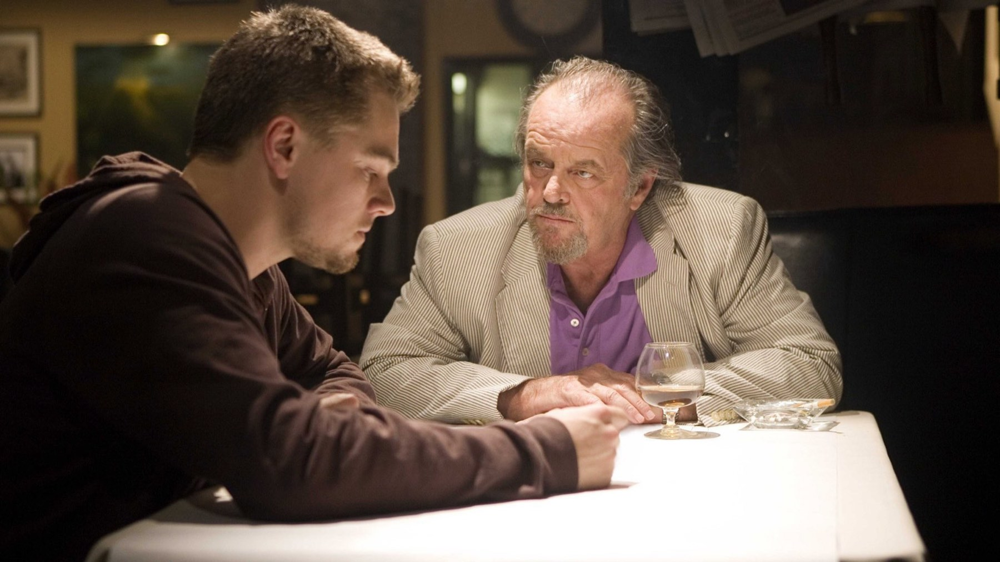
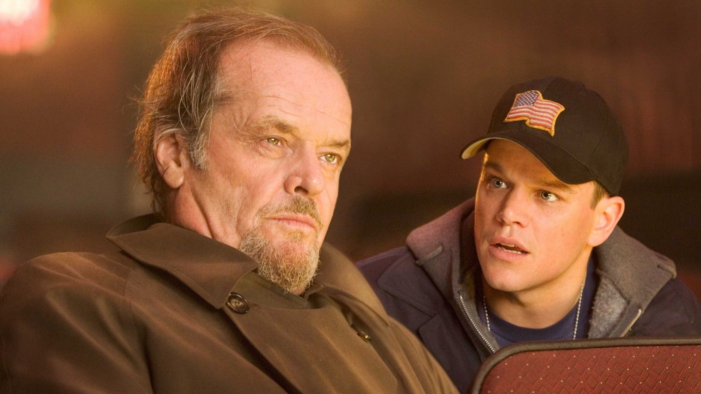
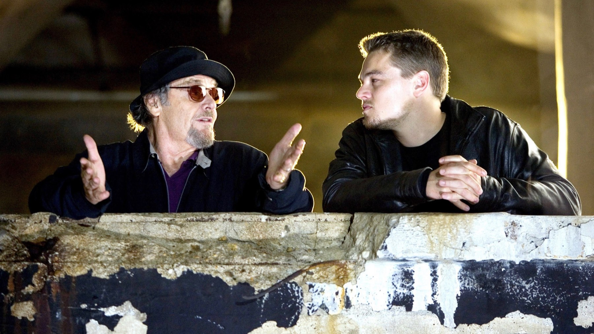

The Departed compie 20 anni
Il 6 ottobre di vent'anni fa usciva negli Stati Uniti il film che ha finalmente regalato l'Oscar a Martin Scorsese.
Il 6 ottobre di vent'anni fa usciva negli Stati Uniti il film che ha finalmente regalato l'Oscar a Martin Scorsese. DiCaprio, Damon, Nicholson e Wahlberg in un gioco di talpe e doppie identità che ancora oggi non smette di sorprenderci.
Ecco cinque cose che (forse) non sapete: sul sito, nell'articolo con le sei curiosità, ne trovate una in più. E voi, quale scena vi è rimasta in testa? Fatecelo sapere qui sotto! ⬇️
Un remake da Oscar

The Departed è il remake di Infernal Affairs, poliziesco di Hong Kong del 2002. Ha vinto l'Oscar come miglior film, cosa rara per un remake di un film straniero.
Finalmente Scorsese

Dopo decenni di nomination mancate, The Departed ha regalato a Martin Scorsese il suo primo e finora unico Oscar alla regia. In tutto il film ne ha vinti quattro.
La nostra sintesiChi è la talpa?
Un boss ispirato al vero

Frank Costello, il boss di Jack Nicholson, si ispira in parte a Whitey Bulger, il criminale di Boston che fu a lungo informatore dell'FBI.
Premiati anche loro

Gli altri due Oscar sono andati alla sceneggiatura non originale di William Monahan e al montaggio di Thelma Schoonmaker, storica collaboratrice di Scorsese.
L'unica nomination

Con un cast pieno di stelle, l'unico attore candidato all'Oscar fu Mark Wahlberg, come miglior attore non protagonista: la sua prima nomination in assoluto.
Vent'anni dopo The Departed resta uno dei gangster movie più tesi e ritmati di sempre. L'occasione perfetta per riguardarlo, cercando la talpa fin dalla prima scena!